Changemakers of New India राष्ट्र निर्माता
नवाचार, सेवा, साहस और संकल्प के अमर प्रतीक — विकसित भारत के वास्तविक वास्तुकार
दक्षिण, पूर्व, उत्तर और पश्चिम — भारत के चारों कोनों से उभरे 47 असाधारण विभूतियाँ जिन्होंने मिसाइल तकनीक, मेट्रो रेल, स्पेस रिसर्च, ग्रामीण उद्यम, सुपर 30, ओलिंपिक खेल और पर्यावरण संरक्षण में अभूतपूर्व इतिहास रचकर 140 करोड़ भारतीयों को गौरवान्वित किया है।
अखिल भारतीय चयन
South, East, North, West
पद्म विभूषण, भूषण, श्री, अर्जुन
शिक्षा, विज्ञान, स्वास्थ्य, खेल

Dr. Tessy Thomas
“Missile Woman of India”
Aerospace scientist · Vice-Chancellor, NICHE, Kanyakumari
The first woman to head a major Indian missile project, she led the Agni-IV and Agni-V programmes at DRDO after early mentorship from Dr. A.P.J. Abdul Kalam, and rose to Director General of Aeronautical Systems. She is a leading inspiration for girls in science.
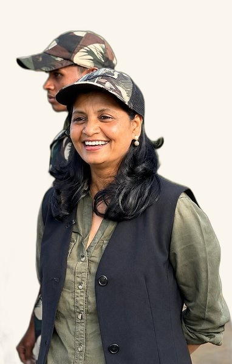
Arunachalam Muruganantham
“Padman of India”
Inventor & social entrepreneur · Jayaashree Industries
Invented a low-cost sanitary pad machine and led grassroots awareness of menstrual hygiene in rural India. His machines go to women’s self-help groups, not corporations — each unit becomes a women-run micro-enterprise. His story inspired the film Pad Man.
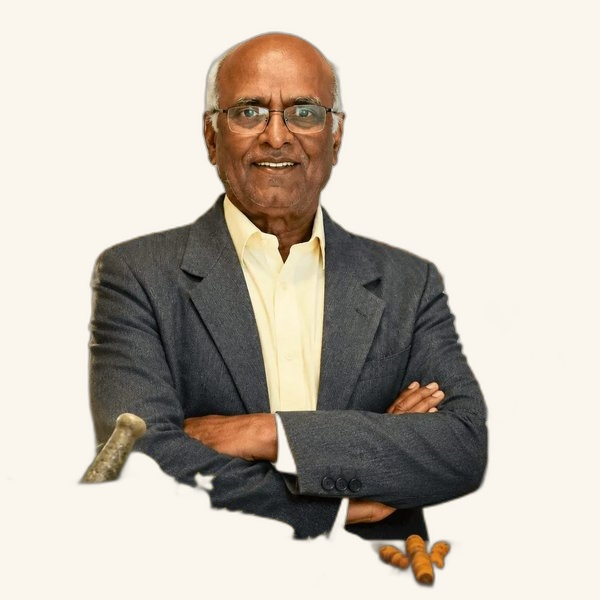
Dr. Punniamurthy Natesan
“Pioneer of ethno-veterinary medicine”
Veterinary pharmacologist · TANUVAS and TDU, Bengaluru
Raised in a farming family in Melamangalam village, he spent four decades turning traditional plant remedies into scientifically validated, low-cost livestock treatments — cutting antibiotic use and protecting small farmers’ incomes. He founded India’s first PG diploma in ethno - veterinary medicine.
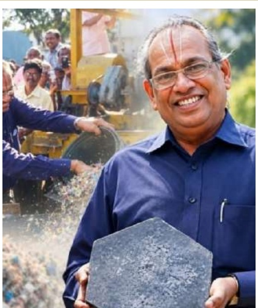
Dr. Rajagopalan Vasudevan
“The Plastic Road Man of India”
Dean & Professor of Chemistry · Thiagarajar College of Engineering
Found a simple way to coat hot stone aggregate with shredded waste plastic before adding bitumen — giving roads that are stronger, water- resistant and pothole-free. He patented the method in 2006 and gave it to the Government of India free of royalty.

Dr. Mylswamy Annadurai
“Moon Man of India”
Former Director, ISRO Satellite Centre · Chandrayaan-1 project director
Born in Kothavadi village, Coimbatore district, and trained at Government College of Technology and PSG College of Technology, he spent about 36 years at ISRO. He was project director of Chandrayaan - 1, programme director of the Mars Orbiter Mission and later led the ISRO Satellite Centre, Bengaluru. He also writes popular -science books in Tamil.
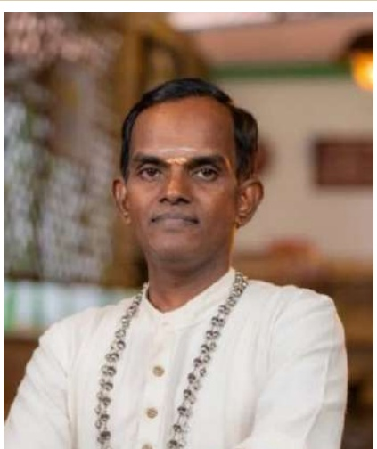
Dr. Padayal Sivakumar
“Healthiest MasterChef of India”
Raw-food chef & wellness researcher · Padayal Academy
A Coimbatore chef who spent nearly three decades studying traditional diets and naturopathy before pioneering “No Oil, No Boil, No Fire” cooking. His restaurant and academy show that raw, plant-based food, built on native spices, millets and flowers, can be both therapeutic and delicious.

Dr. Ar. G. Shankar
“The People’s Architect”
Founder, Habitat Technology Group · UN consultant
Inspired by Laurie Baker, he left luxury architecture in 1987 to house the poor, building with earth, bamboo and lime. Habitat Technology Group grew into South Asia’s largest NGO in shelter, rebuilding after disasters from the Latur earthquake to the 2004 tsunami.

Meenakshi Amma Gurukkal
“Kerala's grand old dame of Kalaripayattu”
Kalaripayattu master · Kadathanadan Kalari Sangham, Vadakara
Trained in Kalaripayattu from childhood, she took over the Vadakara kalari her husband founded in 1949 after his death in 2007. She teaches the northern style, from the stick to the urumi, with free classes and a place for girls.

Dr. E. Sreedharan
“The Metro Man of India”
Former Managing Director, DMRC and Konkan Railway
Civil engineer who restored the cyclone-shattered Pamban Bridge in 46 days, led the 760-km Konkan Railway through rugged Western Ghat terrain, and built the world-class Delhi Metro ahead of schedule and within budget, setting a national benchmark for integrity and project execution.

Dr. S. Nambi Narayanan
“Pioneer of India’s liquid fuel rocket engines”
Aerospace engineer · former ISRO scientist
He joined India’s Thumba rocket station in 1966 and, after a NASA fellowship at Princeton, persuaded ISRO to adopt liquid propulsion. His work led to the Vikas engine that powers the PSLV, GSLV and LVM3 launchers behind missions from Mangalyaan to Chandrayaan.

Sathyanarayana Beleri
“Rice Man of India”
Farmer & agro-biodiversity conserver · Nettanige village
From a small sloped farm in Nettanige, he conserves more than 650 indigenous rice varieties in grow bags, a living gene bank gathered from across South and Northeast India. He shares seed freely with farmers to keep endangered grains alive.
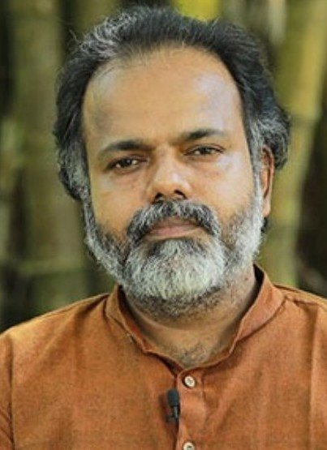
Dr. Sreeraj Gopi
“Global Top 2% Scientist”
Founder & MD · Molecules Biolabs
From a village in Thrissur and a Malayalam-medium government school, he built Molecules Biolabs, which began in his car, into a ₹ 100 crore biotech company without leaving Kerala. He is a six-time Stanford–Elsevier Top 2% scientist.
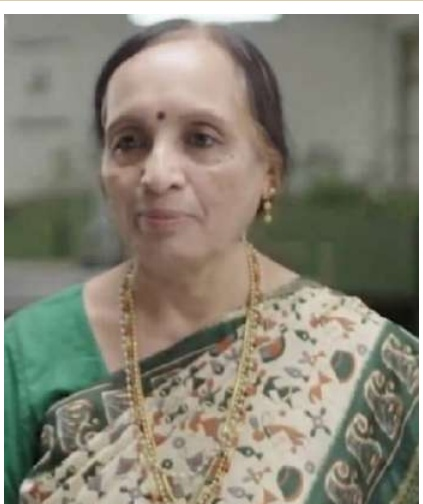
Dr. Shubha Venkatesha Iyengar
“Architect of Safer Flight”
Former Distinguished Scientist, CSIR-National Aerospace Laboratories
Over 46 years at CSIR-NAL she built Drishti — India’s first indigenous runway visibility system — replacing costly imports and keeping flights safe through winter fog. She also contributed to the Agni missile and Ramjet–Scramjet engine programmes.

Anand Malligavad
“Lake Man of India”
Water conservationist · Founder, Malligavad Foundation
A mechanical engineer who left his corporate job to revive Bengaluru’s dying lakes with Chola-era methods — no chemicals, no heavy machinery. His first project, the 36-acre Kyalasanahalli Lake, came back to life in 45 days in 2017.

Dr. Devi Prasad Shetty
“The heart surgeon who made care affordable”
Founder, Narayana Health
Born in Kinnigoli in Dakshina Kannada, he founded Narayana Hrudayalaya in 2001 and built it into a network of hospitals known for low-cost heart surgery. He has performed more than 15,000 heart surgeries. He also designed the Yeshasvini health insurance scheme for farmers in Karnataka.

Dr. Geetha Manjunath
“AI Against Breast Cancer”
Founder & CEO · NIRAMAI Health Analytix
A computer scientist with a PhD from IISc (CSI Gold Medal) and 25+ years at Xerox and HP Labs, she founded NIRAMAI to make early breast-cancer screening radiation-free, non- invasive and affordable using artificial intelligence and thermal imaging.
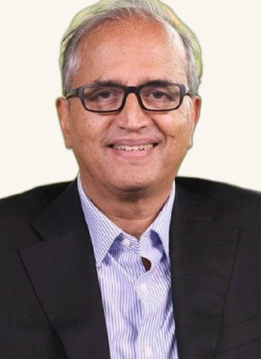
Capt. G. R. Gopinath
“Making flying affordable for every Indian”
Founder · Air Deccan · Author, Simply Fly
Born in Gorur, Hassan district, he served in the Indian Army and retired as a Captain at 28, then became a farmer and entrepreneur. In 2003 he launched Air Deccan, India’s first low- cost airline, and put air travel within reach of first-time flyers.

Pawan Kumar Chandana
“India’s Elon Musk”
Co-founder & CEO, Skyroot Aerospace
An IIT Kharagpur graduate and former ISRO scientist who worked on the GSLV Mk-III, he left in 2018 to co-found Skyroot. In November 2022 its Vikram-S became India’s first privately built rocket to reach space, opening the country’s launch sector to private firms.
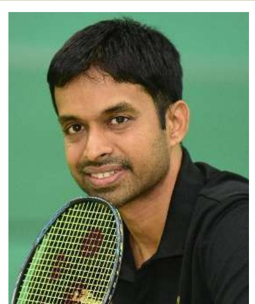
Pullela Gopichand
“The Coach Behind India's Olympic Medals”
Chief National Coach · Founder, Gopichand Badminton Academy
Born near Chirala in Prakasam district, he won the All England Open in 2001. He founded the Gopichand Badminton Academy in Hyderabad in 2008, which has produced Olympic medallists Saina Nehwal (bronze, London 2012) and P. V. Sindhu (silver, Rio 2016; bronze, Tokyo 2020).
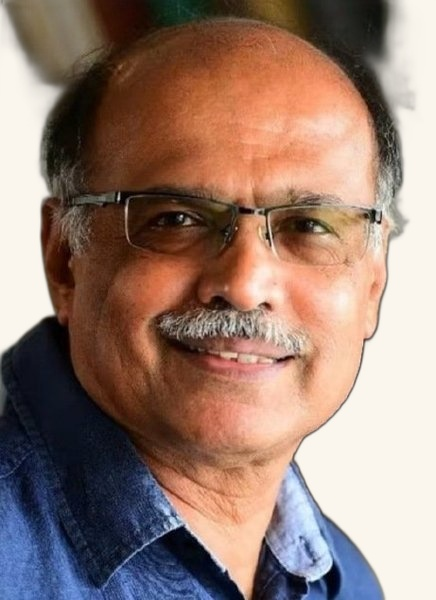
Mithali Raj
“The Run-Machine Who Led India's Women”
Former India captain
Born in Jodhpur and based in Hyderabad, she captained India from 2004 to 2022. In July 2021 she passed Charlotte Edwards' record to become the highest run -scorer in women's international cricket, with 10,868 runs. She led India to the World Cup final in 2005 and 2017 and retired on 8 June 2022.
Dr. D. Nageshwar Reddy
“Pioneer of advanced endoscopy in India”
Founder & Chairman, AIG Hospitals, Hyderabad
Born in Visakhapatnam in 1956, he founded the Asian Institute of Gastroenterology in Hyderabad in 1994. He has published over 1,000 peer-reviewed papers and trained generations of endoscopists. He has received global honours, including the ASGE Master Endoscopist Award and the World Endoscopy Organisation award.
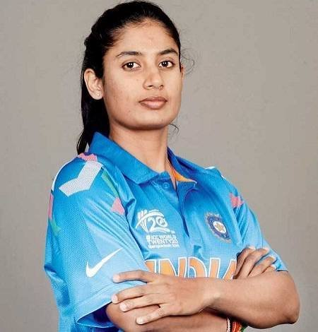
Chintakindi Mallesham
“The Weaver Who Invented the Laxmi ASU Machine”
Inventor, Pochampally handloom · Subject of the film Mallesham (2019)
Born in Sharajpet village, a weaver from the Pochampally belt, he invented the Laxmi ASU machine to spare weavers, mostly women, the tiring manual winding of silk threads. The machine cut the cycle time from around six hours to about 90 minutes. His story was told in the 2019 film Mallesham.
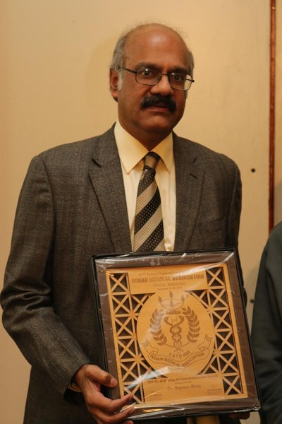
Nikhat Zareen
“Two-Time World Boxing Champion”
Boxer · Nizamabad, Telangana
Born in Nizamabad in 1996, she became World Champion in 2022 in Istanbul at 52 kg. She repeated the feat in 2023 in New Delhi at 50 kg and won the 2022 Commonwealth Games gold in Birmingham. She also took bronze at the Hangzhou Asian Games and competed at the Paris 2024 Olympics.

Karnam Malleswari
“India's First Woman Olympic Medallist”
Sydney 2000 bronze medallist · Vice-Chancellor, Delhi Sports University
Born in Voosavanipeta in Srikakulam district, she won bronze in the 69 kg category at Sydney 2000 with a total lift of 240 kg (110 kg snatch, 130 kg clean and jerk). She was also World Champion in 1994 and 1995. She became Vice-Chancellor of the Delhi Sports University in June 2021.

Jyothi Yarraji
“India's Fastest Woman in 100m Hurdles”
India's fastest woman in 100m Hurdles
National record holder, 100 m hurdles Born in Visakhapatnam in 1999, she holds the national record of 12.78 seconds in the 100 m hurdles. She won gold at the Asian Championships in 2023 in Bangkok and again in 2025 in Gumi, plus silver in the 100 m hurdles at the Hangzhou Asian Games. She represented India at the Paris 2024 Olympics.

C. V. Raju
“Revived Etikoppaka Lacquer Toys with Natural Dyes”
Artisan-innovator, Etikoppaka, Anakapalle district
Born in Jonnavalsa village in Vizianagaram district, he revived the Etikoppaka toy craft in 1988 after its popularity declined. He developed more than 12 vegetable -based dyes and methods to extend their shelf life. He started Padmavati Associates, an artisans' cooperative, and now 160 artisans make the toys.
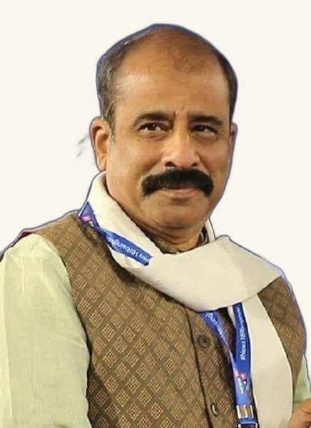
Anand Kumar
“Founder of Super 30”
Founder of Super 30
Ramanujan School of Mathematics Mathematician from a postal clerk’s family who turned a ₹300- a-month classroom into Super 30, a free programme that coaches underprivileged students for IIT-JEE.

Mahavir Singh Phogat
“The Coach Behind Dangal”
Dronacharya Awardee · Wrestling coach, Balali akhara
Former wrestler who left his job to train daughters Geeta and Babita, and nieces Vinesh and Priyanka, transforming women’s wrestling; the film Dangal tells his story.
Dr. R. A. Mashelkar
“Patent King of India”
Chemical engineer & former Director-General, CSIR
Born in Goa in 1943, he served as Director -General of the Council of Scientific and Industrial Research for over eleven years. Under him CSIR challenged the US patents on turmeric and basmati rice, and its share of US patents granted to India reached 40% in 2002. He chaired the National Innovation Foundation from 2000 to 2018.

Bachendri Pal
“First Indian Woman on Mount Everest”
Former Chief, Adventure Programmes, Tata Steel · Co-founder, WANI
Villager from Nakuri who stood on Everest on 23 May 1984, then led the all-women 1993 Indo-Nepalese expedition that put seven women on the summit.
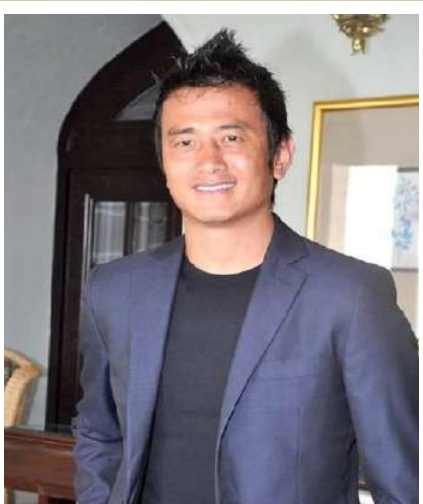
Bhaichung Bhutia
“The “Sikkimese Sniper”
Former India Captain · Founder, Football Schools
Torchbearer of Indian football from Tinkitam, Sikkim, who led India to SAFF, Nehru Cup and AFC Challenge Cup titles and now builds young talent through football schools.

Santosh Yadav
“First Woman to Climb Everest Twice”
Mountaineer · Former Officer, Indo-Tibetan Border Police
Rewari-born mountaineer who summited Everest in 1992 and again in 1993, becoming the first woman to do it twice, and later an environmental campaigner.

Dipa Karmakar
“Pioneer of Indian Gymnastics”
Gymnastics Federation of India · Netaji Subhash Regional Coaching Centre
India’s most celebrated artistic gymnast — the first Indian woman gymnast at the Olympics, who overcame flat feet and rudimentary facilities in Agartala to finish 4th in the Rio 2016 vault final.

Manu Bhaker
“India’s Double Olympic Medallist”
Pistol shooter · Indian Olympian
Pistol ace who bounced back from a Tokyo 2020 malfunction to win two bronzes at Paris 2024, India’s first athlete with two medals at one Games since Independence.

Uddhab Bharali
“Assam’s Real-Life Phunsukh Wangdu”
Founder, UKB Innovations
Mechanical engineer who builds affordable machines for farmers, weavers and people with disabilities — from the world’s first pomegranate de-seeder to tea-leaf pluckers.
Tarundeep Rai
“4-Time Olympian from Sikkim”
Subedar Major, Indian Army
Kirati archer from Namchi who put Sikkim on the global archery map, came back from a career-threatening shoulder injury and now mentors India’s next archers.
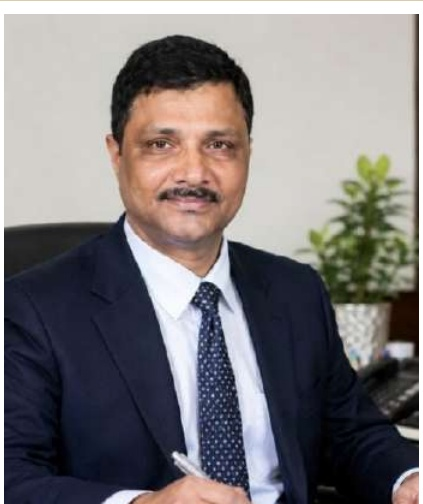
Dr. Arabinda Kumar Padhee
“The ‘Millet Man’ of Odisha”
IAS · Additional Chief Secretary, Government of Odisha
Architect of the Odisha Millets Mission, turning drought-prone tribal districts into a global model of climate-resilient, women- led, nutrition-first agriculture.
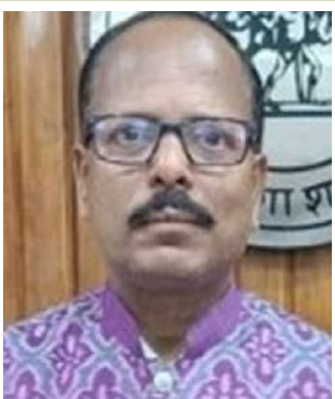
Madhusudan Dash (IAS)
“Architect of the Nuapada Model”
IAS · Collector & District Magistrate, Nuapada
Led Nuapada to become Odisha’s first single-use-plastic-free district through 700+ community drives, 3,200+ garbage points cleared and 500 green buffer zones.

Katulu Ravi Kumar
“Commonwealth Games Gold Medallist”
DSP, Odisha Police · Secretary, Odisha Weightlifting Association
From a rustic Berhampur akhada to Commonwealth gold in the 69 kg class and the London Olympics — now a police DSP mentoring young lifters across Odisha.
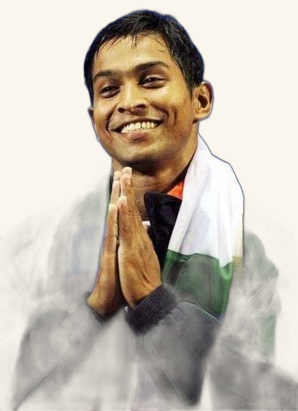
Tukaram Haribhau Mundhe
“The Fearless Civil Servant”
IAS (2005 batch) · Commissioner, Food and Drug Administration
All India Rank 20 officer with a zero-tolerance stance on corruption — 25 transfers in 21 years, each posting leaving behind water, health or transport reform.
Dr. Binish Desai
“The Recycle Man of India”
Founder, ReArtham Tech LLP
At 10–11 he imagined P-Block bricks from paper waste and chewing gum. Founded B-Dream in his teens and Eco Eclectic Technologies (now ReArtham). Known for Brick 2.0 from recycled PPE and Lantana eco-wood.

Rahul Jain
“Pioneer of business coaching in India”
Founder Director · Business Coaching India LLP
He started Business Coaching India in 2004 and introduced structured business coaching to the country. His programmes help entrepreneurs and MSME owners build systems-driven businesses that double profits while working just one day a week.

Dr. Ejaz Ali
“The ₹10 Doctor of Patna”
General surgeon · Former Rajya Sabha MP, Patna
A general surgeon who has practised in Patna since 1984, he has charged just Rs 10 for a consultation for about three decades. He sees over 100 patients a day, lets patients pay surgery fees in instalments and sometimes waives them. He also campaigns for Dalit Muslims.

Gaurav Anand
“Turning Weeds into Livelihoods”
Environmental engineer · Founder, Swachhata Pukare Foundation
After a 16-year corporate career, he founded the Swachhata Pukare Foundation in Jamshedpur in 2019 to restore rivers and lakes. His team turns invasive water hyacinth into handloom sarees, notebooks, bags and mats, creating income for rural and tribal women.

Sudarsan Pattnaik
“Master of Sand Art”
Sand artist · Founder, Sudarsan Sand Art Institute, Puri
Born in Puri, he turned the beach into a global art stage, taking his sand sculptures on social and environmental themes to festivals across the world. He founded the Sudarsan Sand Art Institute in 1994 and received the Padma Shri in 2014.
Abhishek Ray
“Composer Who Rewilded a Hill”
Founder, Sitabani Wildlife Reserve · Music Composer
Bollywood composer who bought a barren hill beside Corbett National Park, replanted it with native trees and water sources, and made it protected habitat for tigers, leopards and black bears.
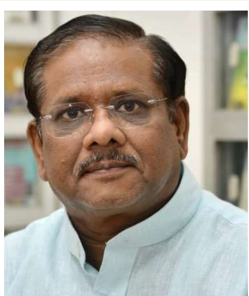
Dr. Chandrakant Sambhaji Pandav
“The Iodine Man of India”
Former Professor & Head, Centre for Community Medicine · AIIMS, New Delhi
A community-medicine physician who spent decades on a hidden hunger: iodine deficiency. As a WHO and UNICEF consultant and South Asia coordinator of the Iodine Global Network, he helped drive universal salt iodisation in India.
कोई परिणाम नहीं मिला
आपके द्वारा खोजे गए शब्द या चुने गए फ़िल्टर के अनुसार कोई राष्ट्र निर्माता नहीं मिला। कृपया फ़िल्टर रीसेट करें।